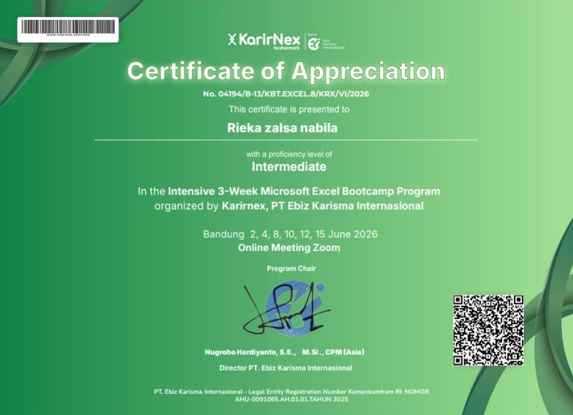
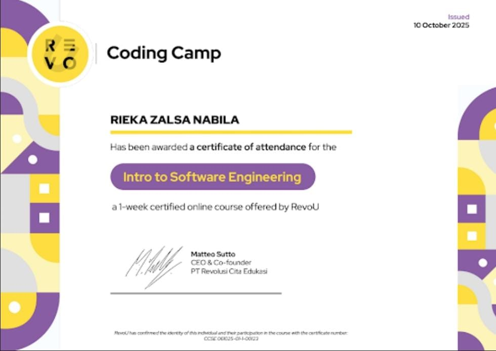
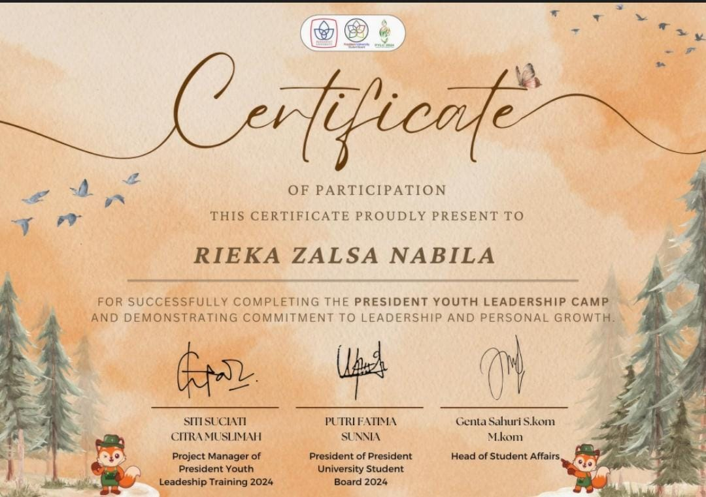
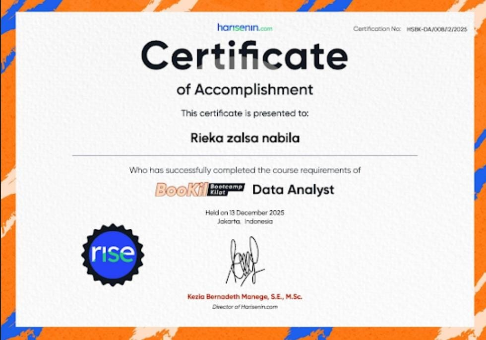
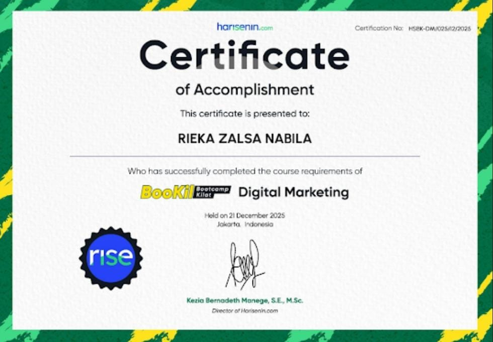

📜 Certificates
Berikut adalah beberapa sertifikasi profesional dan pelatihan yang telah saya selesaikan.

Sertifikat Microsoft Excel (KarirNex)
Diterbitkan: June 2026
Sertifikat penyelesaian Intensive Bootcamp selama 3 minggu untuk tingkat Intermediate. Fokus pada penggunaan rumus kompleks (advanced formulas), manajemen spreadsheet, serta pengolahan data menggunakan Microsoft Excel.

Sertifikat Software Engineering (RevoU)
Diterbitkan: Oct 2025
Sertifikat partisipasi dalam kursus online intensif selama 1 minggu yang diselenggarakan oleh RevoU. Mempelajari dasar-dasar rekayasa perangkat lunak (Software Engineering) dan fundamental pemrograman.

Sertifikat President Youth Leadership Camp
Diterbitkan: Oct 2024
Sertifikat penyelesaian atas partisipasi dalam President Youth Leadership Camp, yang berfokus pada kepemimpinan, komunikasi, kerja sama tim, dan pengembangan organisasi.

Sertifikat Full Stack Developer (Harisenin.com)
Diterbitkan: Jan 2026
Sertifikat kelulusan Bootcamp Kilat Full Stack Developer. Mencakup pemahaman komprehensif mengenai pengembangan sisi depan (front-end) dan sisi belakang (back-end) sebuah aplikasi web menggunakan teknologi industri terkini.

Sertifikat Data Analyst (Harisenin.com)
Diterbitkan: Dec 2025
Sertifikat kelulusan Bootcamp Kilat Data Analyst. Program ini mencakup pembelajaran intensif mengenai pengolahan data, visualisasi data, dan penggunaan alat analisis untuk mendukung pengambilan keputusan bisnis berbasis data.

Sertifikat Digital Marketing (Harisenin.com)
Diterbitkan: Dec 2025
Bukti penyelesaian program Bootcamp Kilat Digital Marketing. Fokus pada pengembangan strategi pemasaran digital, manajemen kampanye, serta analisis pasar untuk meningkatkan performa brand di platform online.